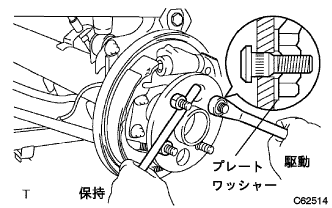

リヤアクスル ハブ ボルト LH 取り付け
印刷
準備品一覧
1. リヤアクスル ハブ ボルト LH取り付け

新品のハブボルトに図のようなプレートワツシヤを通し、ナット(M12×1.5mm)を締め付けながら取り付ける。
□ 参 考 □
プレートワツシヤの厚さは、5mm以上が望ましい。
2. リヤブレーキ ドラム取り付け
3. リヤタイヤ取り付け
基準値
T = 103 N・m{ 1050 kgf・cm }